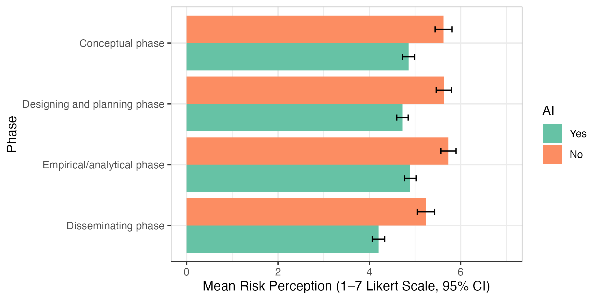
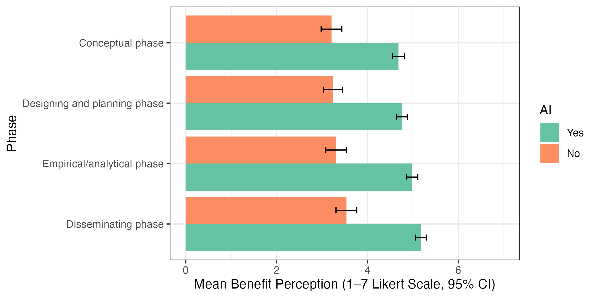
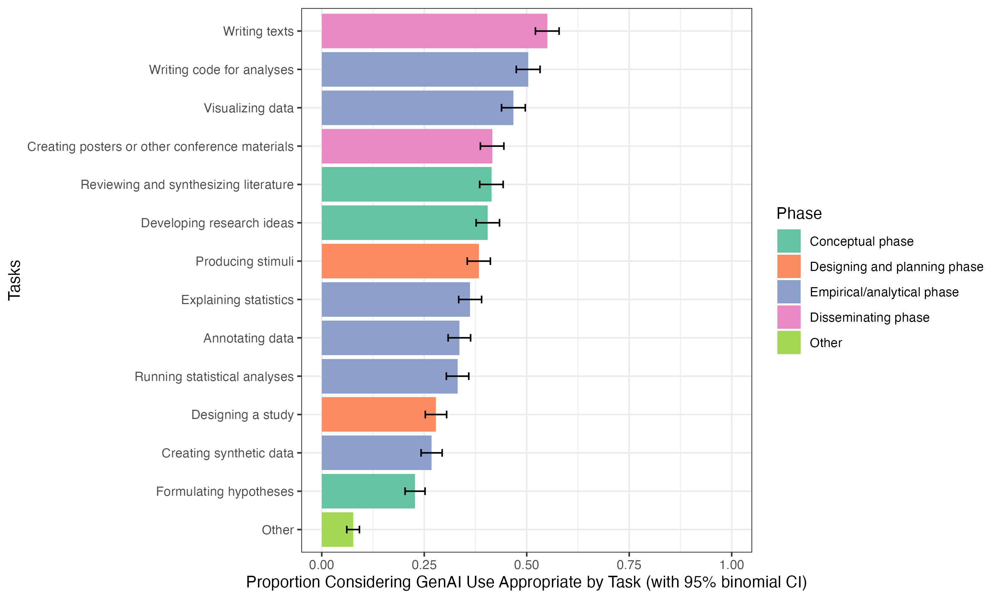
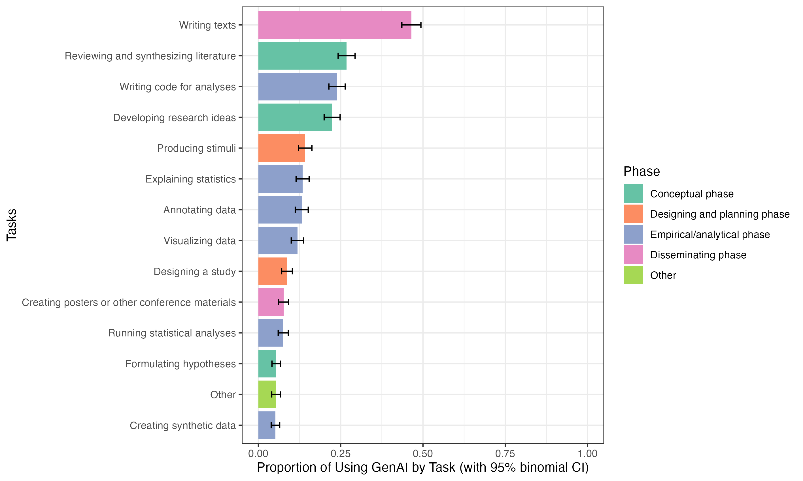
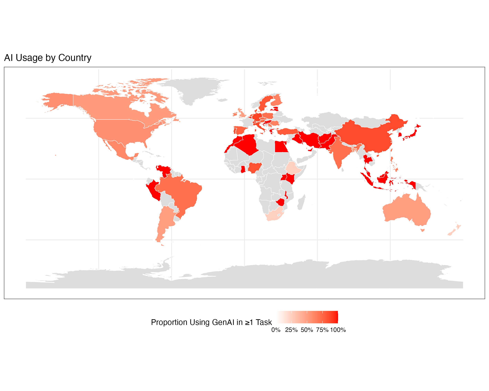
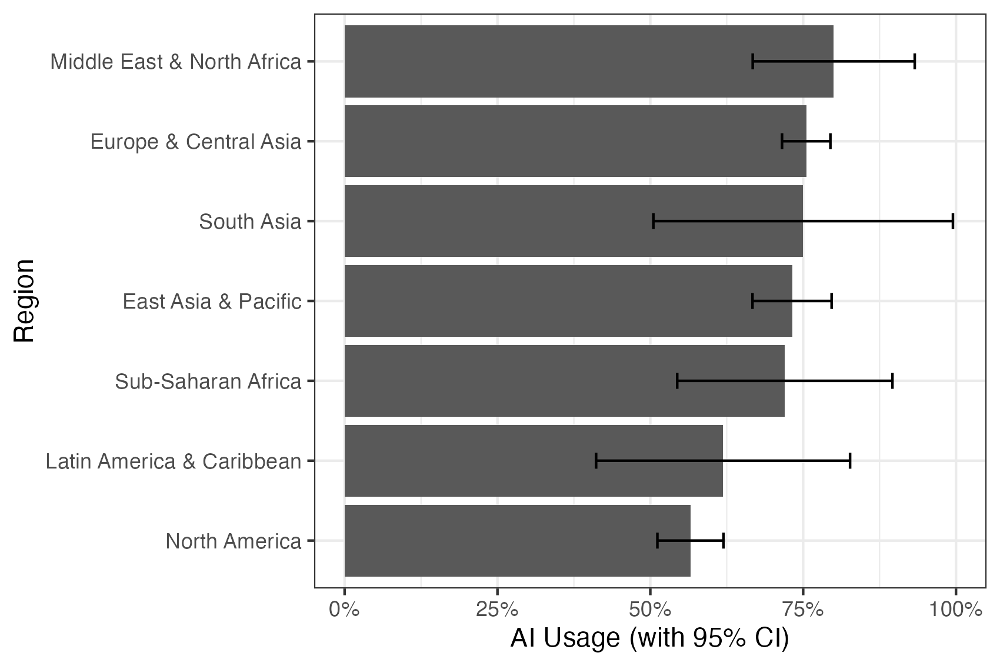
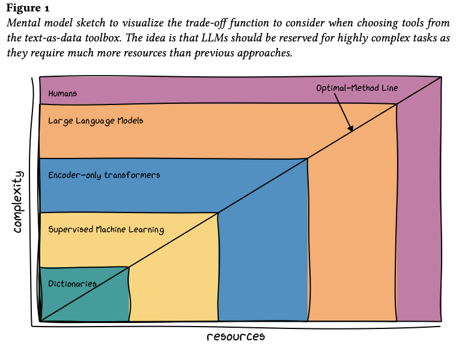

Navigating the Uncertain Role of GenAI in Communication Research
Justin Chun-ting Ho
National Yang Ming Chiao Tung University
Do you use GenAI tools?
Do you know how to properly use GenAI tools?
Do you think university professors know how to properly use GenAI tools?
Let's find out...
How Do Communication Scholars Use GenAI?
- Collected 14,590 emails from top-tier journals in communication (SSCI Top 100)
- Survey: N = 1,138
- Interviews: 4 sessions, 18 participants
Do you use GenAI tools in your research?

Do you think using GenAI tools is risky?

Observation 1
Most people use GenAI tools,
everyone believes using GenAI is risky.
Then why do they still use it?
Do you think using GenAI tools is benefitial?

Which research tasks are suitable for GenAI tools?

Which tasks do you actually use AI tools for?

Observation 2
Most people think most tasks are not suitable for GenAI,
but every task has at least some people using GenAI.


Observation 3: Regional Differences
- Higher usage in Asia and Africa
- Lower usage in Europe and the US
- North American scholars are uniquely resistant toward GenAI tools
- Any idea why?
Observation 4 (from Interviews)
(Almost) no one feels confident
that they can use GenAI tools “properly and responsibly”
We have a new tool, that no one knows how to use, most people think it is not okay to use, but everyone is using it anyways (in many cases secretly).
This is very bad
This is also very bad
What should we do?
Two Mental Models
- GenAI as Stochastic Parrots
- GenAI as just another computational tool
AI is a Stochastic Parrots 🦜
On Stochastic Parrot
- LLM is trained on massive datasets (the Internet)
- The heart of LLM is Next-Token Prediction:
The cat sat on the _____.
An [LLM] is a system for haphazardly stitching together sequences of linguistic forms it has observed in its vast training data, according to probabilistic information about how they combine, but without any reference to meaning: a stochastic parrot.
Problem 1: the data
- The internet is full of biases
- Garbage in, garbage out
- You get biased outputs and unequal performance
- The effect is often multipied in downstream tasks

Problem 2: the technology
- A very capable parrot is still a parrot
- It can only ever repeat what has been said before, not producing something new
- This is why GenAI models can be an expert in some tasks, but an idiot in other "similar" tasks
Problem 3: the product
- Most GenAI systems are commercial products that are trained to "look capable and convincing"
- They actually sound very capable and convincing, regardless the true performance
- GenAI are excellent bullshitter and people pleaser
Takeaways
- Know the limits of AI, and use wisely
- It is totally fine for some tasks: eg, proofreading
- It is a total diaster for other: eg, research design
- Extra caution for certain tasks: eg, lit. review
- A human must create the last draft
(some say also the first draft)
AI is just another computational tool
Writing was ground-breaking, but now it is just one mode of communication.
When is the last time you caculate
a regression by hand?
A new tool
- Researchers have been using computers for decades
- What's revolutionary about GenAI is they do not require any technical knowledge
- This ease of use has led to many misuses
AI is not a silver bullet for all research problems.
Research design is always a trade-off.
Assuming you are running a survey,
how many cases would you collect?
The Cost
- Financial cost
- Risk of biases
- Interpretability
- Reproducibility
- Open science
The Gains
- Some tasks can only be done by GenAI (I think)
- It needs to be justified, eg by showing simpler methods cannot achieve satisfactory performance

The way forward
- The Basics still applies:
- Basic principles
- Techniques for validation
- Metrics for evaluation
- Responsible GenAI use is an active field of research:
Thank You!
LinkedIn: justinchuntingho
Github: justinchuntingho
Email: jcho@nycu.edu.tw